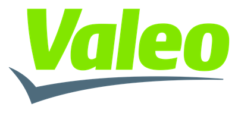
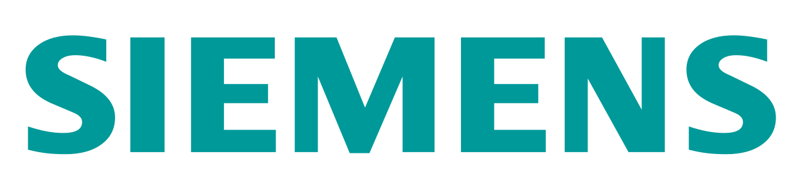
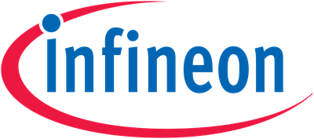
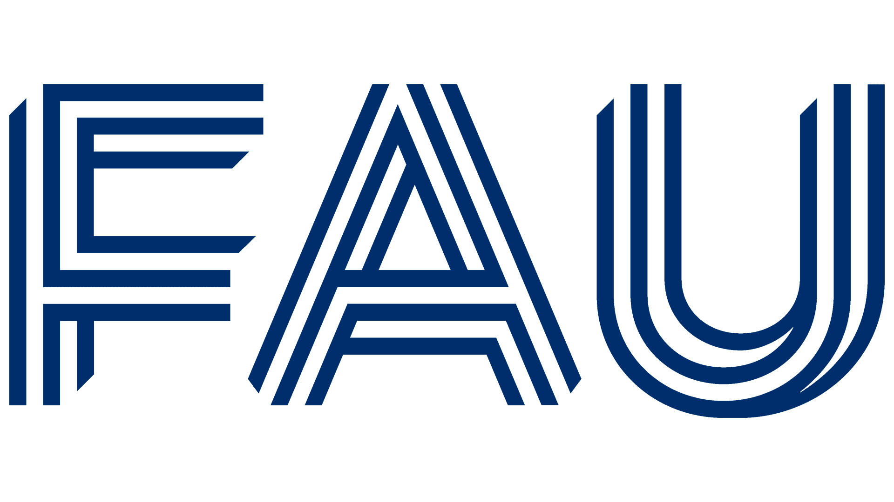

Nico Bührig
IT-Infrastruktur | Werkstudent | Homelab-Enthusiast
💼 Arbeitserfahrung

Valeo eAutomotive
Werkstudent Discipline Software (HIL IT)
- Tool- & Webentwicklung: Implementierung eines Web-Interfaces zur Verwaltung von HIL-Proxmox-VMs (PHP, Proxmox API, HTML, CSS, JavaScript).
- Automatisierung & Netzwerk: Entwicklung von PowerShell-Tools zur Remote-VM-Verwaltung (WinRM/CIM) für Updates und Netzlaufwerke sowie Skripte für Nmap-Subnetz-Scans.
- Access Management: Erstellung komplexer Google Workflows zur Zutrittskontrolle, Rechteverwaltung und automatisierten Nutzeraufnahme im Active Directory (ADD) und in Google Groups.

Siemens AG
Werkstudent Information Technology (IT GX XS COS)
- IT-Projektmanagement: PMO-Unterstützung für komplexe globale IT Carve-out-Projekte.
- Globaler Rollout: Konzeption, Test und Rollout-Steuerung von 90.000 Windows-Clients in über 150 Ländern.
- Cybersecurity: Sicherstellung von Cybersecurity-Anforderungen und Aussteuerung länderspezifischer Rollout-Tests.

Infineon Technologies AG
Praktikum (Customer Service)
Einwöchiges Praktikum im technischen Kundenservice: Einblicke in die internen Schnittstellen eines Halbleiterunternehmens sowie Begleitung von hardwarenahen Projekten (Mikrocontroller/Prototyping) und Prozessen der Fehleranalyse.
🖥️ Homelab & Infrastruktur
Advanced Homelab Architecture
Virtualisierung, GitOps & System-Architektur
- Virtualisierung & Micro-Segmentierung: Betrieb isolierter LXC-Container auf Proxmox VE mit strikter PVE-Firewall (dedizierte Security Groups für WebApp, Infra und CI/CD). Vollständige GitOps-Versionierung aller Stacks.
- GitOps CI/CD & Automatisierung: Vollautomatisierte Deployment-Pipeline via GitHub Actions und isolierten Self-Hosted Runner (CT 115). Secret-Scanning (TruffleHog), Concurrency-Locks und globale Host-Wartungsskripte.
- Security & Disaster Recovery: Zero-Trust Ingress via Cloudflare Tunnel und Nginx Proxy Manager. Ausführliches Disaster-Recovery-Konzept mit verschlüsselten Offsite-Backups via Rclone (Crypt auf Google Drive).
- Smart Home & Edge Gateway: Komplexe Home-Assistant-Architektur mit autarkem Raspberry Pi als Edge-Gateway (Zigbee & Z-Wave via MQTTS), SD-Karten-Flash-Schutz (Wear-Leveling) und Hardware-Sentinel.
- Hardware-Basis & Assemblierung: Eigenständige Konzeption, Assemblierung und Wartung der System-Hardware (Custom Builds), thermische Optimierung und praktische Fehleranalyse.
🎓 Bildungsweg

FAU Erlangen-Nürnberg
B.Sc. Informations- und Kommunikationstechnik (IuK)
- Fokus auf Netzwerksysteme, Infrastruktur und Nachrichtentechnik.
FAU Erlangen-Nürnberg
B.Sc. Informatik (Fachwechsel)
- Nebenfach: BWL und Enterprise Content & Collaboration Management (ECCM).
- Praxis & Projekte: Applied Software Engineering Bachelor-Praktikum (Note: 1,3) sowie Hauptseminar - Nailing your Thesis (Note: 1,7).
- Theoretische Informatik: Berechenbarkeit und Formale Sprachen, Grundlagen der Logik, Theorie der Programmierung.
- Datenbanksysteme & Modellierung: Implementierung von Datenbanksystemen, Konzeptionelle Modellierung.
- Spezialisierungen: Vertiefungsrichtung IT-Sicherheit (Forensische Informatik), Zukunft der Automobiltechnik und Automotive Systems and Software Engineering.
Helene-Lange-Gymnasium Fürth
Allgemeine Hochschulreife (Abitur)